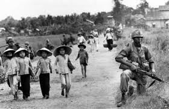

}
GUERRA DE VIETNAM

El conflicto surgió a partir de la Primera Guerra de Indochina (1946-1954), en la que las tropas coloniales francesas combatieron contra el Viet Minh liderado por los comunistas en la Indochina francesa. La mayor parte de la financiación del esfuerzo de guerra francés fue proporcionado por los Estados Unidos. Después de que los franceses abandonaran Indochina tras ser derrotados en 1954, en la Conferencia de Ginebra se decidió el abandono de la colonia asiática, la separación de Vietnam en dos estados soberanos (Vietnam del Norte y Vietnam del Sur) y la celebración de un referéndum un año después donde los vietnamitas decidirían su reunificación o su separación definitiva. Pero los dirigentes del Sur optaron por dar un golpe de estado y no celebrar este referéndum para evitar que ganara la reunificación. Por este motivo Vietnam del Norte comenzó las infiltraciones de soldados en apoyo del Vietcong para anexionarse a Vietnam del Sur. Entonces Estados Unidos, en virtud de la Doctrina Truman y la Teoría del dominó (contener la expansión del comunismo), envió recursos y a partir de 1964 tropas a Vietnam del Sur para evitar la conquista por el norte comunista, dando lugar a este conflicto.
DESARROLLO DEL CONFLICTO:DE LO LOCAL A LO GLOBAL
El desarrollo del conflicto, que cada vez fue sumando nuevos actores mundiales en calidad de aliados, se puede resumir así:
1964: Vietnam del Norte prosigue sus acciones en Vietnam del Sur a través del Frente de Liberación Nacional (FLN).
1965: Estados Unidos intensifica sus acciones militares contra los rebeldes que buscan someter a Vietnam del Sur.
1967: Pese a la contundencia de sus acciones militares, EE. UU. no consigue derrotar a las tropas del FLN que operan en Vietnam del Sur.
1968: El presidente Johnson ordena cesar los bombardeos en Vietnam del Norte y su sucesor, Richard Nixon, promete que los soldados norteamericanos regresarán pronto a su país.
1969: Se inician las conversaciones de paz en París.
1970: Estados Unidos y Vietnam del sur invaden Camboya, país vecino.
1972: Vietnam del Norte invade a su vecino del sur y Estados Unidos reinicia los bombardeos en territorio norvietnamita.
1973: Las partes acuerdan un alto el fuego y EE. UU. se retira del conflicto. Las conversaciones en París continúan. Sin embargo, es inminente que la situación derive en la unificación de los dos territorios en un solo país, algo contra lo que siempre luchó Estados Unidos.
1974: La guerra continúa entre los dos bandos vietnamitas.
1975: Se consuma la victoria del FLN con la toma de la ciudad de Saigón.
1976: Unificación: nace la República Socialista de Vietnam.
.VOLVER A LA PAGINA PRINCIPAL